Front-Tied Shoe
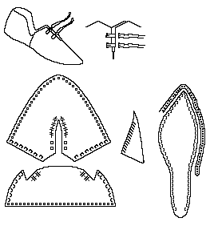
Shoes and Pattens Figure 52,98. Sole is cowhide, the upper is calf, lace is calf. (BC 72 [250] <4039>, dock construction, c.1330-50) (illustration after Mitford).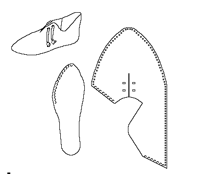
Shoes and Pattens Figure 53,99. Child's shoe. Sole is cattle, the upper is calf. (BC 72 [79] <2585>, dock infill, c.1375-1400) (illustration after Mitford).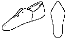
Shoe from the collection of the York Archaeological Trust.Front-Tied Boot
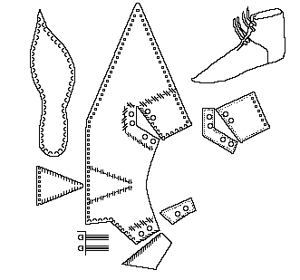
Shoes and Pattens Figure 55,100. Sole is cowhide, the upper is calf. There is a heel stiffener. (BC 72 [55] <1668>, dock infill, c.1375-1400) (illustration after Mitford). It is made with a rand or a full welt. It is tied by two individual laces, doubled over and drawn through the eyeholes.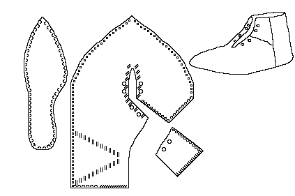
Shoes and Pattens Figure 56,57,101. Sole is cattle, the upper is calf. There is a heel stiffener. (BC 72 [79] <2513>, dock infill, c.1375-1400; BC 72 [83] <1920>, dock infill, c.1375-1400) (illustration after Mitford). It is made with a rand or a full welt. It is tied by two individual laces, doubled over and drawn through the eyeholes.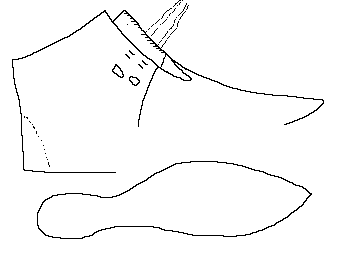
Boot from Northampton Shoe Museum (Sheep Street D.180/1976.56). It is representative of a common Northampton shoe style.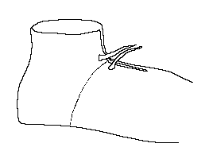
Boot from Northampton Shoe Museum (Sheep Street D.180/1976.24). It is representative of a common Northampton shoe style.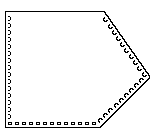
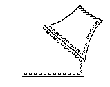
Boot sections from Northampton Shoe Museum (D.180/1976.16)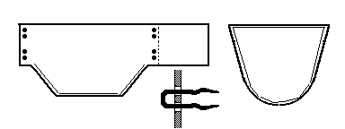
A front-tied boot, based on one in Medieval Life although with some basic changes in design. It is made with a rand or a full welt. It is tied by two individual laces, doubled over and drawn through the eyeholes.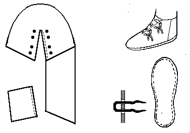
A front-tied boot, based on one in Medieval Soldier. It is made with a rand or a full welt. It is tied by doubled laces, drawn though the holes and tied. It may be made with an attached tongue.Footwear of the Middle Ages - Historical Shoe Designs/Front Tied shoes and Boots,
by I. Marc Carlson. Copyright 1999
This page is given for the free exchange of information, provided the Author's Name is
included in all future revisions, and no money change hands, other than as expressed in
the Copyright Page.
{kind=link}
{kind=link}
{kind=link}
{kind=link}
{kind=link}